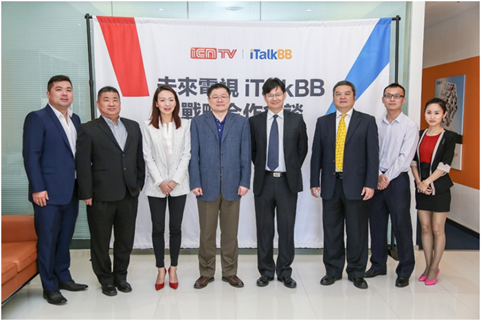
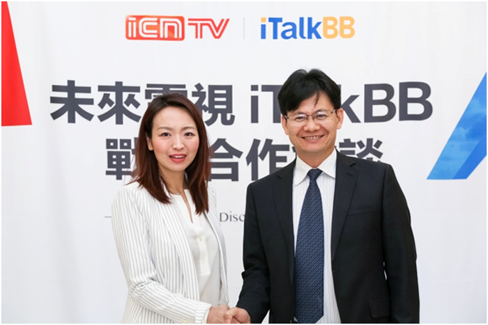

未來電視CEO攜管理團隊訪問iTalkBB，深化戰略合作推進海外中文電視發展
4月15日，未來電視有限公司CEO熊智輝先生率管理團隊抵達美國洛杉磯，一行率先參觀了iTalkBB亞凱迪亞旗艦店，並與iTalkBB集團副總裁肖瑗先生和iTalkBB執行副總裁VictoriaLei女士及其管理團隊，舉行了戰略合作會談。本次會晤，雙方深化理解互信，達成合作共識，將以未來電視擁有的央視強勢版權內容為基礎，以iTalkBB中文電視為搭載平台，推進海外中文電視向著更豐富、穩定和高清的方向發展。
iTalkBB和未來電視有限公司管理團隊
iTalkBB執行副總裁VictoriaLei（左）與未來電視有限公司CEO熊智輝（右）
成立13年，作為海外華人首選電信品牌，iTalkBB一直致力於為海外華人提供更美好的生活，為海外華人量身打造全方位、高品質的電信產品和服務。而未來電視有限公司作為國家新媒體平台的重要組成部分，也始終堅持將高質量的正版華語電視內容推廣到世界各地，推動中華文化在海外的傳播。共同的美好願景促成了未來電視有限公司與iTalkBB的強強聯合。
未來電視有限公司是中國網絡電視台(CNTV)旗下的子公司，未來電視是國內第一家持有互聯網電視牌照的企業，同時也是唯一一家可使用廣電總局批准的“中國互聯網電視”的呼號在全國及海外開展互聯網電視業務的牌照方。
未來電視CEO熊智輝先生表示，“iTalkBB是在海外華人群體中具有巨大影響力的電信品牌，植根於華人，深刻的了解華人的產品需求和收視習慣。我們非常需要與iTalkBB這樣兼具國際視野和本土意識的企業合作，這將有助於正版中文電視在世界範圍內的推廣和傳播。”

未來電視有限公司CEO熊智輝高度評價了與iTalkBB的戰略合作
iTalkBB執行副總裁VictoriaLei女士指出：“iTalkBB一直致力於為用戶創造更好的使用體驗。此次與未來電視深化戰略合作，我們希望可以藉助未來電視強大的資源庫，為廣大海外華人提供穩定、高清、豐富的影視資源，更好的滿足用戶需求，為華人打造更精彩的海外生活。”

iTalkBB執行副總裁Victoria Lei（左）與未來電視有限公司CMO謝永紅（右）
13年來，iTalkBB中文電視憑藉精彩的影視節目、高清的視覺體驗、完善的操作系統、周到的售後服務，蟬聯全美銷量第一。聯手未來電視的舉措體現了iTalkBB尊重知識產權、支持維護正版的決心。本次會談在未來電視和iTalkBB合作中具有里程碑式的意義，以此為新的起點，雙方將深化合作與互信，攜手共建正版海外中文電視播出平台，讓海外華人盡享豐富、穩定、高清的影視娛樂資源，也為中華文化走向世界提供了更廣闊的空間。